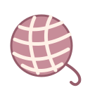

9 проектов
Идеи для одежды, аксессуаров и головных уборов.
«Петелька» — учебный веб-проект для тех, кто любит вязание и хочет находить новые идеи в одном месте. Здесь собраны простые проекты, вдохновение и инструменты, которые помогают не отвлекаться от творчества.
Наша цель — сделать знакомство с вязанием понятнее и приятнее: выбрать изделие, оценить сложность, открыть описание и воспользоваться удобным счётчиком рядов.
Выбрать проект
Идеи для одежды, аксессуаров и головных уборов.
Удобный поиск по названию, категории и сложности.
Счётчик рядов и калькулятор петель на отдельной странице.
Начни с простого проекта — и пусть каждая новая петля приносит радость.
Перейти в каталог